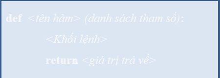

BÀI 6: HÀM TRONG PYTHON
6.1 Định nghĩa hàm trong Python
Hàm là một chương trình con gồm một tập các câu lệnh giải quyết một công
việc cụ thể từ các tham số, giá trị truyền vào hàm sau khi thực hiện các
câu lệnh hàm kết thúc có hoặc không trả về một giá trị cụ thể.
Hàm
được chia thành hai nhóm:
- • Hàm có sẵn (built – in function): là những hàm được cung cấp sẵn trong Python như print(), input(),… chúng ta không sửa đổi logic bên trong các hàm này.
- • Hàm tự định nghĩa (user – defined fuction): là những hàm được định nghĩa bởi các lập trình viên. Lập trình viên sẽ tự khai báo logic bên trong các hàm này.
Việc sử dụng hàm trong chương trình giúp lập trình viên tiết kiệm được nhiều thời gian, chương trình dễ đọc, dễ gỡ rối và đặc biệt là rất hiệu quả trong việc bảo trì và nâng cấp.
6.2 Xây dựng 1 hàm
Để định nghĩa một hàm, chúng ta sử dụng cú pháp sau:
Trong đó:
-
< tên hàm >: Do người dùng đặt theo qui tắc đặt tên, nên đặt tên hàm gợi nhớ đến nhiệm vụ hàm.
-
< danh sách tham số >: Các tham số truyền vào làm giá trị đầu vào cho hàm để giải quyết công vệc, < danh sách tham số > có thể có hoặc không, nếu có nhiều thì các tham số cách nhau bởi dấu phẩy.
-
< khối lệnh >: Gồm hữu hạn các lệnh trong thân hàm thực hiện một công việc nào đó, nó được viết lùi sang phải một khoảng trống so với từ khoá def.
-
< giá trị trả về >: Là giá trị trả về của hàm sau khi hoàn thành công việc nếu có lệnh return.
Ví dụ 6.1: Hàm tự định nghĩa helloPython() không có tham số